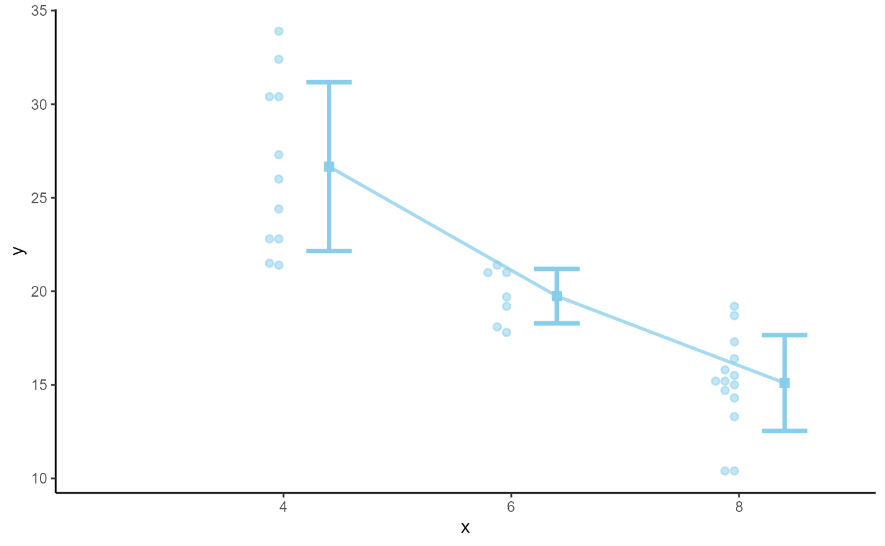

Simple Summary Plots
sum_plot.RmdThe gg_sum function can be used to create simple
summaries of data from factorial experiments. The gg_ident
function is meant to be used to visualize paired comparisons. Like all
functions in this packages, they are created to simplify code that I
commonly have to write.
Data
To start, let us use the mtcars dataset to make some
simple plots. Just as a note, this plotting function is meant to plot 1
continuous variable, on the y-axis and then use factors to plot on the
x-axis, color, and/or facets.
For the gg_ident example, we will use the
iris data.
Simple one-way plot
Default
gg_sum(
data = mt2,
y = mpg,
x = cyl
) + theme_classic()Customized
The plots have customizing features.
gg_sum(
data = mt2,
y = mpg,
x = cyl,
sum_color = "skyblue",
point_color = "skyblue",
point_alpha = .5,
) + theme_classic()
Adding groups
gg_sum(
data = mt2,
y = mpg,
x = cyl,
group = am,
) + theme_classic()Customized
The dots need to have the fill aspect also applied.
gg_sum(
data = mt2,
y = mpg,
x = cyl,
group = am,
point_alpha = .5,
sum_alpha = .6
) +
scale_color_viridis_d(end = .8) +
scale_fill_viridis_d(end = .8) +
theme_classic()Facets
Rather than, or in addition to, facets can be applied.
gg_sum(
data = mt2,
y = mpg,
x = am,
panel = cyl,
trace = FALSE,
point_alpha = .5,
) + theme_classic()Bigger Data
The plots above really only work with small datasets. I have other features for larger datasets.
data("ChickWeight")
cw = ChickWeight
cw$time = as.factor(cw$Time)
cw$diet = as.factor(cw$Diet)
cw = cw[which(as.numeric(cw$Time) < 8),]No Grouping
We can suppress the points and plot a “slab” instead
gg_sum(cw,
x = time,
y = weight,
sum_color = "darkgrey",
sum_alpha = .5,
show_points = FALSE,
show_slab = TRUE,
err_width = .2) Groups
gg_sum(cw,
x = time,
y = weight,
group = diet,
show_points = FALSE,
#show_slab = TRUE,
err_width = .2) +
scale_color_viridis_d(end = .8) +
scale_fill_viridis_d(end = .8) +
theme_classic()Line-of-Identity Plots
In some cases, we may have simple paired comparisons. Imagine that
the iris data contains 4 measures under 4 separate
conditions. You may want to compare the differences between the
conditions. Therefore, you can use a line-of-identity (sometimes called
“line of equality”) plot to determine the differentiation between the
conditions. This plot is good to use in these scenarios because the line
can be viewed as the demarcation point a positive or negative effect.
The more data points shifted in one direction would then indicate a
stronger size/direction of effect.
gg_ident(x = Sepal.Width,
y = Sepal.Length,
data = iris)